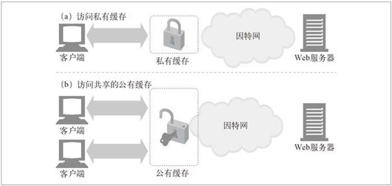
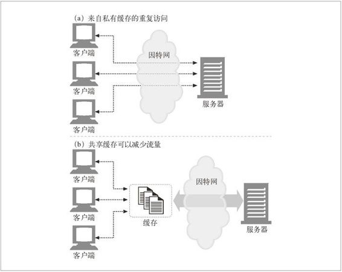
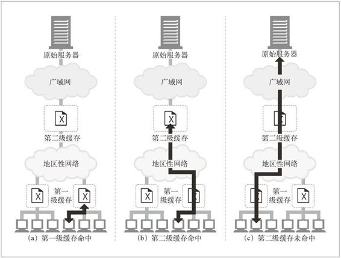
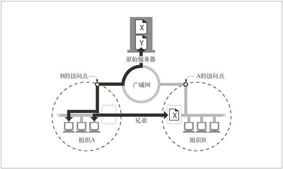

7.6 缓存的拓扑结构
缓存可以是单个用户专用的，也可以是数千名用户共享的。专用缓存被称为私有缓存（private cache）。私有缓存是个人的缓存，包含了单个用户最常用的页面（参见图 7-7a）。共享的缓存被称为公有缓存（public cache）。公有缓存中包含了某个用户团体的常用页面（参见图 7-7b）。

图 7-7 公有和私有缓存
7.6.1 私有缓存
私有缓存不需要很大的动力或存储空间，这样就可以将其做得很小，很便宜。Web 浏览器中有内建的私有缓存——大多数浏览器都会将常用文档缓存在你个人电脑的磁盘和内存中，并且允许用户去配置缓存的大小和各种设置。还可以去看看浏览器的缓存中有些什么内容。比如，对微软的 Internet Explorer 来说，可以从 Tools（工具）→ Internet Options...（因特网选项）对话框中获取缓存内容。MSIE 将缓存的文档称为“临时文件”，并将其与相关的 URL 和文档过期时间一起在文件列表中列出。通过特殊的 URL about:cache 可以查看网景的 Navigator 的缓存内容，这个 URL 会给出一个显示了缓存内容的“磁盘缓存统计”页面。
7.6.2 公有代理缓存
公有缓存是特殊的共享代理服务器，被称为缓存代理服务器（caching proxy server），或者更常见地被称为代理缓存（proxy cache）（第 6 章讨论过代理）。代理缓存会从本地缓存中提供文档，或者代表用户与服务器进行联系。公有缓存会接受来自多个用户的访问，所以通过它可以更好地减少冗余流量。1
1 公有缓存要缓存用户群体中各种不同的兴趣点，所以要足够大才能承载常用的文档集，而不会被单个用户所感兴趣的文档占满。
在图 7-8a 中，每个客户端都会重复地访问一个（还不在私有缓存中的）新的“热门”文档。每个私有缓存都要获取同一份文档，这样它就会多次穿过网络。而如图 7-8b 所示，使用共享的公有缓存时，对于这个流行的对象，缓存只要取一次就行了，它会用共享的副本为所有的请求服务，以降低网络流量。

图 7-8 共享的公有缓存可以降低网络流量
代理缓存遵循第 6 章描述的代理规则。可以通过指定手工代理，或者通过代理自动配置文件，将你的浏览器配置为使用代理缓存（参见 6.4.1 节）。还可以通过使用拦截代理在不配置浏览器的情况下，强制 HTTP 请求经过缓存传输（参见第 20 章）。
7.6.3 代理缓存的层次结构
在实际中，实现层次化（hierarchy）的缓存是很有意义的，在这种结构中，在较小缓存中未命中的请求会被导向较大的父缓存（parent cache），由它来为剩下的那些“提炼过的”流量提供服务。图 7-9 显示了一个两级的缓存层次结构。2 其基本思想 是在靠近客户端的地方使用小型廉价缓存，而更高层次中，则逐步采用更大、功能 更强的缓存来装载多用户共享的文档。3
2 如果客户端浏览器自带缓存，那么从技术上来讲，图 7-9 显示的就是一个三级的缓存层次结构。
3 父缓存可能要更大一些，以便装载在多用户间流行的文档，它们还要接收来自很多子缓存的聚合流量，这些子缓存的兴趣点可能很分散，所以还需要更高的性能。

图 7-9 在两级的缓存层次结构中访问文档
我们希望大部分用户都能在附近的第一级缓存中命中（参见图 7-9a）。如果没有命中，较大的父缓存可能能够处理它们的请求（参见图 7-9b）。在缓存层次结构很深的情况下，请求可能要穿过很长一溜缓存，但每个拦截代理都会添加一些性能损耗，当代理链路变得很长的时候，这种性能损耗会变得非常明显。4
4 在实际中，网络结构会尝试着将其深度限制在连续的两到三个代理以内。但是，新一代的高性能代理服务器会使代理链的长度变得不那么重要。
7.6.4 网状缓存、内容路由以及对等缓存
有些网络结构会构建复杂的网状缓存（cache mesh），而不是简单的缓存层次结构。网状缓存中的代理缓存之间会以更加复杂的方式进行对话，做出动态的缓存通信决策，决定与哪个父缓存进行对话，或者决定彻底绕开缓存，直接连接原始服务器。这种代理缓存会决定选择何种路由对内容进行访问、管理和传送，因此可将其称为内容路由器（content router）。
网状缓存中为内容路由设计的缓存（除了其他任务之外）要完成下列所有功能。
根据 URL 在父缓存或原始服务器之间进行动态选择。
根据 URL 动态地选择一个特定的父缓存。
前往父缓存之前，在本地缓存中搜索已缓存的副本。
允许其他缓存对其缓存的部分内容进行访问，但不允许因特网流量通过它们的缓存。
缓存之间这些更为复杂的关系允许不同的组织互为对等（peer）实体，将它们的缓存连接起来以实现共赢。提供可选的对等支持的缓存被称为兄弟缓存（sibling cache）（参见图 7-10）。HTTP 并不支持兄弟缓存，所以人们通过一些协议对 HTTP 进行了扩展，比如因特网缓存协议（Internet Cache Protocol，ICP）和超文本缓存协议（HyperText Caching Protocol，HTCP）。我们将在第 20 章讨论这些协议。

图 7-10 兄弟缓存